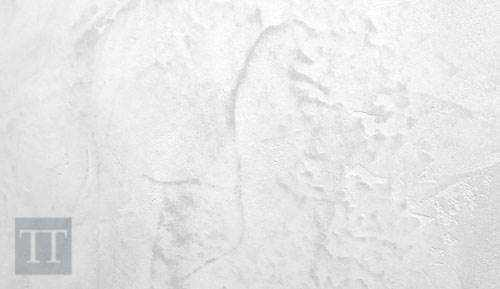

Cómo evitar manchas o marcas no deseadas al aplicar microcemento
Motivos que producen manchas en microcemento y soluciones a las marcas. Procesos para evitar posibles imperfecciones.
Marcas de las juntas de los azulejos
Algunos puntos deben ser considerados para evitar que se marquen las juntas de los azulejos:
- Debemos prestar atención a la diferencia de absorción entre las baldosas y juntas: la resina contenida en el microcemento se absorbe de manera diferente si no se toma ninguna precaución corremos el riesgo de que aparezcan en forma de espectro visual al secar (patrón visual). Humedad en las juntas también provoca este defecto.
- Las juntas son generalmente huecas, no están en el mismo plano que el azulejo, la retracción del Microcemento una vez seco crea un relieve en la zona de juntas (patrón en relieve)
Por esto, con nuestro sistema creamos una capa que aísla y nivela. Por este motivo es muy importante que, tras rellenar las juntas, se deje secar 24 horas ates de comenzar con la aplicación de la microbase

Marcas de la llana, resaltando irregularidades de la mano anterior
Tendremos que aplicar el microcemento sin dejar rebabas o relieves que evidencien el paso de la llana, lijando estas imperfecciones en cada mano. Si aplicamos sobre una capa con rebabas, se copiarán estos relieves.
Con la llana de acero y un exceso de presión estas imperfeciones provocan el efecto "quemado” manchas oscuras que reflejan la falta de lijado de la capa inferior.
Lijado de las irregularidades
Tendremos que lijar el microcemento después de cada mano para evitar el efecto descrito en el apartado anterior.
Efectuaremos un suave desbastado con una lijadora roto-orbital de bajas revoluciones o mediante guante de lijado, y lijas de carburo de silicio.
Aproximadamente a las 3 horas de la aplicación se aprecia un cambio de tono del microcemento volviéndose más claro, esto indica que el microcemento es transitable y lo suficientemente duro para proceder al lijado, la temperatura, la humedad ambiente y la ventilación de la estancia influyen en este plazo de tiempo.
Recomendamos lijar antes de las 12 horas de la aplicación para que el revestimiento no haya alcanzado una dureza excesiva y sea más complicado este paso.
